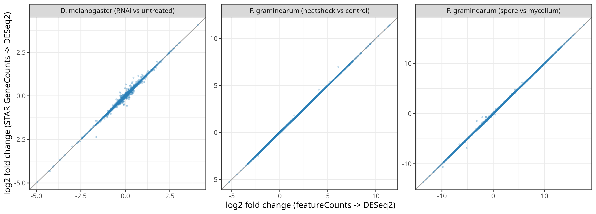
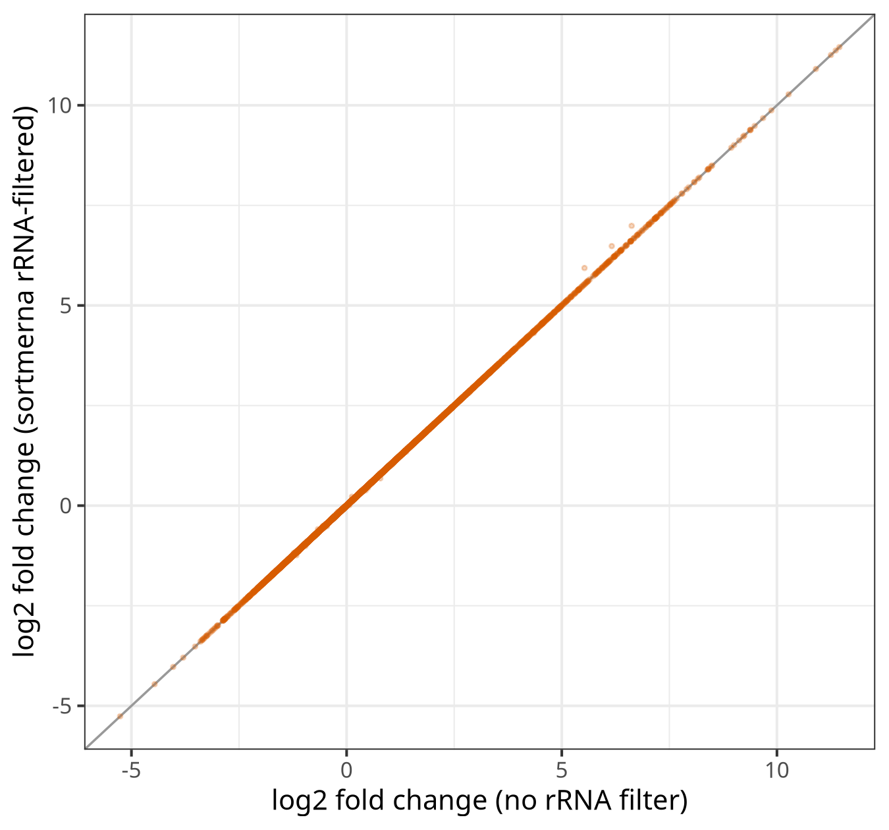

Validation
Benchmarks
BulkSeq Studio is validated by a benchmark suite (B1–B15) that tests the pipeline against simulated ground truth, established tools, and itself across input modes, aligners, differential-expression engines, and organisms. The full benchmark snapshot — tables, figures, and pinned environments — is deposited on Zenodo, and the accompanying manuscript is in preparation for submission to a peer-reviewed journal.
Every number below traces to a checksummed result table in the deposited archive. Cite the snapshot as 10.5281/zenodo.20955660.
B1–B10: the core validation
Ten benchmark families, each probing one part of the default analysis (STAR to featureCounts to DESeq2 to clusterProfiler enrichment). Headline results:
| Benchmark | What it tests | Headline result |
|---|---|---|
| B1 | Correctness vs simulated ground truth (count- and read-level) | Power, precision, and fold-change recovery rise with replication; read-level FDR controlled (0.048 +/- 0.006 over 6 seeds), LFC Pearson 0.976 |
| B2 | FDR / null calibration under a true null | Raw p-values near nominal 0.05; BH false positives essentially absent at n=10 (mean 0.8 / 12000 genes); inherits DESeq2 small-sample behaviour, motivating the 4-6 replicate guidance |
| B3 | Accuracy curves (iCOBRA TPR vs observed FDR) | Power ordered n10 > n5 > n3 at every FDR; observed FDR tightens toward nominal as replication grows |
| B4 | Concordance vs nf-core/rnaseq 3.14.0 | LFC Spearman 0.97-0.99, DEG Jaccard 0.81-0.91, CAT top-100 0.85-0.93 across a fly and a fungus; all acceptance criteria met |
| B5 | Internal aligner concordance (STAR / HISAT2 / Salmon) | STAR and HISAT2 near-identical (LFC r 0.985-0.9997); Salmon agrees on fold change (r 0.94-0.996) with expected boundary-DEG differences |
| B6 | Input-mode equivalence (count-matrix, bring-your-own DESeq2) | Both entry points reproduce the FASTQ-path DESeq2 exactly (max abs diff = 0 on all result columns; up/down Jaccard 1.0) across three anchors |
| B7 | Microarray (limma) route validation | vs canonical limma-trend-robust: logFC Pearson 1.0, max abs diff 0, identical DEG sets (440 vs 440), positive control reproduced exactly; cross-platform arm (B7.2) agrees RNA-seq vs microarray (95.7% directional) |
| B8 | Multi-organism breadth + non-model enrichment | Real KEGG ORA and STRING networks for a fungus (FGSG_ locus tags) and a crop (RefSeq LOC route) without a Bioconductor OrgDb; g:Profiler fallback recovers 100% of OrgDb GO (exact-or-parent/child) |
| B9 | Runtime / memory scaling + large-genome rescue | STAR index RAM scales with genome length (1 to 57.9 GiB) and overflows on wheat; Salmon indexes the same genomes at ~1 GiB, restoring quantification |
| B10 | Reproducibility and determinism | Identical sha256 across reruns and thread counts (4 vs 16 cores), max abs LFC diff 0; databases pinned (Ensembl 111, STRING v12.0) |
B7.2 and B8: cross-platform and non-model concordance
Two arms within existing families (added in the 0.16.0 revision; still B1–B15, no new families), shown here in benchmark-number order.
B7.2 — cross-platform RNA-seq versus microarray
The microarray and RNA-seq routes were compared on the same biology measured by both technologies: human liver versus kidney (Marioni 2008). The RNA-seq arm (SRA000299, Salmon + DESeq2) and the microarray arm (GSE11045, limma) were joined on gene symbol. Across 16,640 shared genes the per-gene log2 fold changes correlated at Pearson 0.69 (Spearman 0.62), and among the 3,967 genes significant on both platforms the direction agreed for 95.7%. The canonical tissue markers were concordant on both platforms — ALB, APOA1, SERPINA1 up in liver; UMOD, SLC34A1 up in kidney. The moderate fold-change correlation is expected (the two technologies measure expression differently); the strong directional agreement and the marker controls confirm the two routes recover the same biology.
B8 — g:Profiler-versus-OrgDb GO concordance
The g:Profiler route (the fallback used for non-model organisms) was checked against the gold-standard clusterProfiler + Bioconductor-OrgDb route on one identical gene set, using an organism that has both (the human airway differentially expressed genes). The OrgDb route returned 33 significant GO:BP terms and g:Profiler 69. Exact-term overlap was moderate (Jaccard 0.19), as expected from the different multiple-testing corrections, GO snapshots, and identifier mapping — but every OrgDb term was recovered by g:Profiler at the exact or parent/child level (100%), the two routes ranked the shared terms almost identically (Spearman 0.86), and identifier mapping was high both ways (97% and 99%). The fallback therefore recovers the same GO biology as the OrgDb route, over a somewhat broader term set — support for its use on the non-model organisms that lack an OrgDb.
New in 0.15.0 (B11-B13)
The 0.15.0 snapshot adds three benchmarks covering the analytical surfaces introduced since 0.12.1: the STAR gene-counts quantifier, custom gene-set enrichment, and the rRNA-filtering path. Each was adversarially reviewed before deposit.
B11 — STAR gene-counts vs featureCounts
Does the new STAR gene-counts quantifier (counts from STAR's --quantMode GeneCounts) agree with the default featureCounts? Both arms ran on the same BAM and through the identical DESeq2 path, so only the counting algorithm differs.
| Dataset | Strand | Count r (log2) | LFC Pearson | DEG Jaccard (padj<0.05) | DEG Jaccard (+|LFC|≥1) |
|---|---|---|---|---|---|
| fgval (F. graminearum) | unstranded | 0.9997 | 0.9999 | 0.9950 | 0.9956 |
| fghs (F. graminearum) | reverse | 1.0000 | 1.0000 | 0.9993 | 0.9991 |
| pasilla (D. melanogaster) | unstranded | 0.9981 | 0.9969 | 0.9619 | 0.9463 |
The two quantifiers are effectively interchangeable on these data: per-gene counts correlate at r ≥ 0.998, fold changes at Pearson ≥ 0.997, and DEG sets overlap at Jaccard 0.95-1.0. The reverse-stranded case is exact (1.0000). pasilla is the most divergent arm, reflecting its small DEG set, and is reported as-is. The claim is equivalence on these three datasets (two organisms, strand 0 and 2, paired-end), not a universal guarantee.

B12 — custom gene-set enrichment (equivalence check)
This benchmark is an implementation-equivalence / regression check, not an independent validation of the enrichment statistics. A gene set built from the same KEGG sets the built-in route uses is fed back through the custom enrichment engine, and the output is compared to the built-in KEGG result.
- GSEA reproduces the built-in KEGG GSEA exactly (12 of 12 terms, Jaccard 1.0).
- ORA reproduces the built-in 4 terms exactly when the universe is matched to the KEGG-annotated background (2619 genes).
- With its own default universe (all 8280 tested genes) the custom ORA returns 0 terms — the more conservative, defensible background. This is the genuinely informative result, not a discrepancy.
- A wrong-namespace input (human symbols against FGSG_ ids, 0 overlap) returns REVIEW_REQUIRED rather than a silent empty result — the namespace-mismatch guard fires.
B13 — rRNA filtering (SortMeRNA)
The shipped SortMeRNA command filtered rRNA from six fungal total-RNA samples, then STAR, featureCounts, and DESeq2 ran on the filtered reads. The unfiltered arm is the B11 fghs result, so the two arms differ only in rRNA filtering.
| Metric | Value |
|---|---|
| Mean rRNA removed | 13.1% (11.65-16.09%) |
| LFC Pearson / Spearman (filtered vs unfiltered) | 1.000 / 1.000 |
| DEG count padj<0.05 (unfiltered → filtered) | 5836 → 5827 |
| DEG Jaccard padj<0.05 | 0.9978 |
| DEG Jaccard +|LFC|≥1 | 0.9963 |
Removing ~13% of reads as rRNA leaves the differential-expression result essentially unchanged (DEG Jaccard 0.998, fold-change correlation 1.0). The mechanism is direct: although SortMeRNA flagged 12-16% of reads as rRNA, the featureCounts-assigned read pairs fell by only 0.27-0.49% per sample. The rRNA reads were landing on rRNA loci or NoFeatures, not in the protein-coding gene counts that feed DESeq2, so the count matrix is barely perturbed.

New in 0.16.0 (B14-B15)
The 0.16.0 snapshot adds two benchmarks: concordance of the two optional differential-expression engines against DESeq2, and an applicability check on a human dataset. Both were reviewed before deposit.
B14 — differential-expression engine concordance
The two optional engines (limma-voom and edgeR quasi-likelihood) are validated against DESeq2 on identical count matrices, so only the engine differs. On the Fusarium graminearum spore-versus-mycelium set:
| Engine vs DESeq2 | LFC Spearman | Top-DEG Jaccard | Direction agreement |
|---|---|---|---|
| limma-voom | 0.997 | 0.94 | 100% |
| edgeR quasi-likelihood | 1.000 | 0.97 | 100% |
The two alternatives track DESeq2 closely and agree with it on the direction of every shared differentially expressed gene. DESeq2 remains the default and its result on this set is byte-for-byte unchanged (2,723 up / 2,478 down), so the alternative engines add a cross-check without altering the validated default.
B15 — human-dataset applicability
The other benchmarks use a fungus, a crop, and model animals; B15 checks that the human annotation path runs end to end and recovers known biology. The airway smooth-muscle dexamethasone study (two treated, two control) was processed through the Salmon route against GRCh38 (Ensembl release 111) with org.Hs.eg.db-based enrichment and a STRING network at taxon 9606. Reads were subsampled to about two million pairs per sample, so this is a signature-recovery check on reduced depth, not a full-depth reanalysis.
Under that constraint the pipeline recovered the canonical glucocorticoid-response programme: the most strongly up-regulated genes were the expected dexamethasone targets FKBP5 (adjusted p ~5 × 10⁻²⁴), ZBTB16, KLF15, and SPARCL1, while the pro-inflammatory adhesion molecule VCAM1 was down-regulated, consistent with the known anti-inflammatory action of glucocorticoids. The enrichment step returned GO and KEGG terms and the STRING network built to 117 nodes, so the human path delivers the same enrichment and network outputs as the non-human organisms and confirms the human GRCh38 / Salmon / org.Hs.eg.db route end to end.